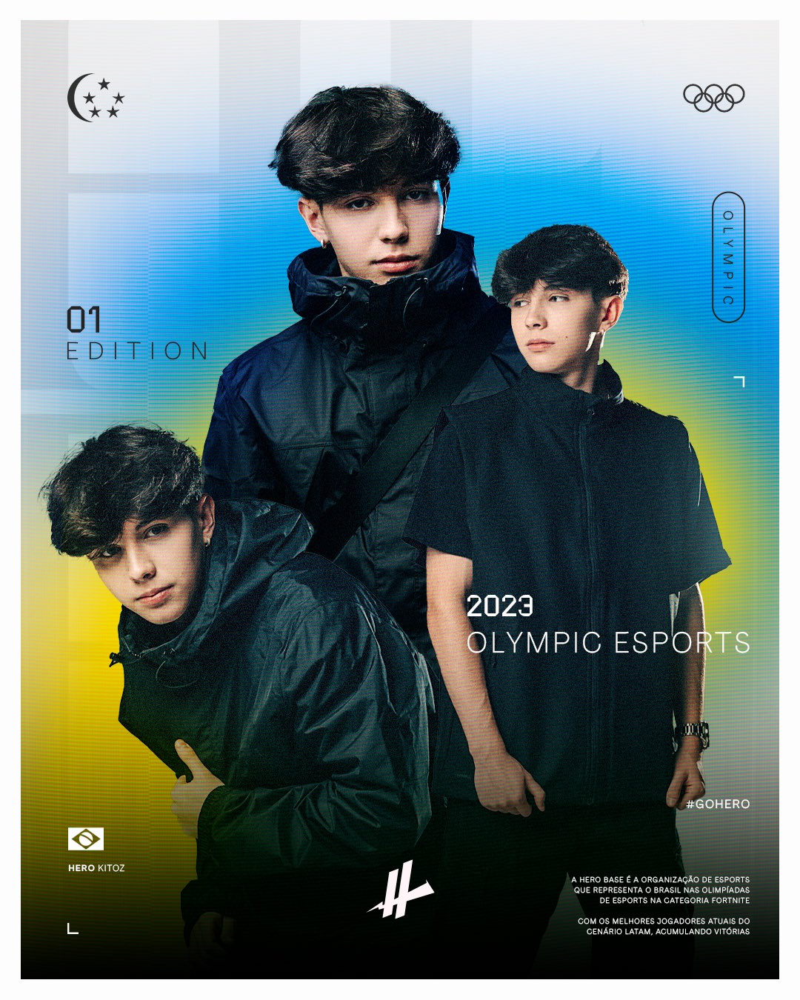

Kitoz
Títulos
Kitoz João “Kitoz” Ferreira é outro nome de destaque no cenário competitivo de Fortnite no Brasil. Conhecido por sua habilidade mecânica, inteligência estratégica e participação em torneios, Kitoz rapidamente se tornou uma das figuras mais respeitadas no país no cenário de esportes eletrônicos, especialmente em competições de Fortnite. Início da Carreira: Kitoz começou a se destacar no Fortnite em 2021. Sua dedicação e paixão pelo jogo o contribuíram para competir em torneios e se tornar conhecido na comunidade brasileira. Ele ganhou popularidade por sua jogabilidade precisa e pelo estilo único de combinação de mecânica e estratégia
- FNCS: Duos Cap.3 Temporada 1
- FNCS: Duos Cap.4 Temporada 1
